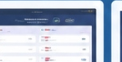

‘My Projects
Lihat Semua
Proyek Saya
Beberapa proyek sistem informasi dan web yang pernah saya kerjakan.
Sistem Informasi Perpustakaan
Lihat detail
Web Application & Skripsi
Sistem Informasi Perpustakaan
Perancangan dan implementasi sistem informasi perpustakaan berbasis web menggunakan metode Agile.
Laravel
MySQL
Tailwind
Sistem Pengaduan Siswa

Lihat detail
Web Application
Sistem Pengaduan Siswa
Aplikasi pengaduan siswa di SMK Jakarta Pusat 1 dengan metode Agile.
Laravel
MySQL
HTML/CSS/JS
Web Form Komnas HAM
Lihat detail
Web Form & Portal
Web Form Komnas HAM
Pengembangan website form pengaduan pelanggaran HAM sebagai project perkuliahan.
PHP
MySQL
HTML/CSS/JS